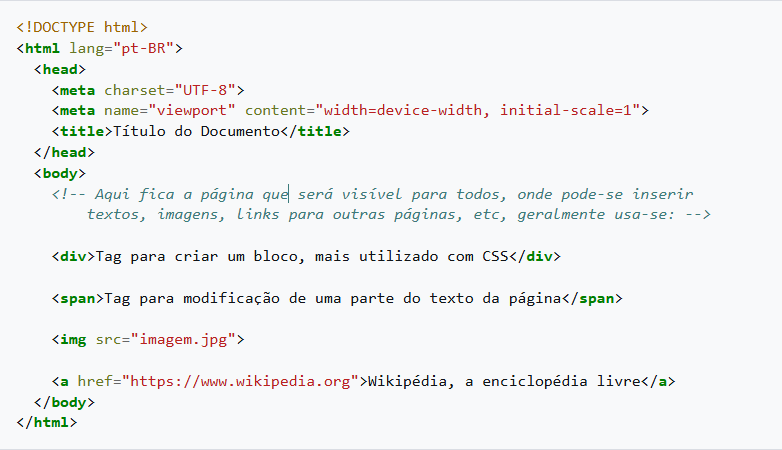

Tudo sobre HTML
HTML
HTML (abreviação para a expressão inglesa HyperText Markup Language, que significa "Linguagem de Marcação de Hipertexto") é uma linguagem de marcação utilizada na construção de páginas na Web. Documentos HTML podem ser interpretados por navegadores. A tecnologia é fruto da junção entre os padrões HyTime e SGML.
HyTime é um padrão para a representação estruturada de hipermídia e conteúdo baseado em tempo. Um documento é visto como um conjunto de eventos concorrentes dependentes de tempo (como áudio, vídeo etc.), conectados por hiperligações (em inglês: hyperlink e link). O padrão é independente de outros padrões de processamento de texto em geral.
SGML é um padrão de formatação de textos. Não foi desenvolvido para hipertexto, mas tornou-se conveniente para transformar documentos em hiper-objetos e para descrever as ligações.
História
Tim Berners-Lee (físico britânico) criou o HTML original (e outros protocolos associados, como o HTTP), numa estação NeXTcube, usando o ambiente de desenvolvimento NeXTSTEP. Na época, a linguagem não era uma especificação, mas uma coleção de ferramentas para resolver um problema de Tim: a comunicação e disseminação das pesquisas entre ele e o seu grupo de colegas. A sua solução, combinada com a então emergente internet pública (que se tornaria a Internet), ganhou atenção mundial.
As primeiras versões do HTML foram definidas com regras sintáticas flexíveis, o que ajudou aqueles sem familiaridade com a publicação na Web. Através do tempo, a utilização de ferramentas para autoria de HTML aumentou, assim como a tendência em tornar a sintaxe cada vez mais rígida. Apesar disso, por questões históricas (retrocompatibilidade), os navegadores ainda hoje conseguem interpretar páginas web que estão longe de ser um código HTML válido.
A linguagem foi definida em especificações formais na década de 1990, inspiradas nas propostas originais de Tim Berners-Lee em criar uma linguagem baseada em SGML para a Internet. A primeira publicação foi esboçada por Berners-Lee e Dan Connolly e publicada em 1993 na IETF, como uma aplicação formal para o SGML (com uma DTD em SGML definindo a gramática). A IETF criou um grupo de trabalho para o HTML no ano seguinte e publicou o HTML 2.0 em 1995. Desde 1996, as especificações HTML vêm sendo mantidas, com o auxílio de fabricantes de software, pelo World Wide Web Consortium (W3C). Apesar disso, em 2000 a linguagem tornou-se também uma norma internacional (ISO/IEC 15445:2000). A recomendação HTML 4.01 foi publicada no final de 1999 pelo W3C. Uma errata ainda foi lançada em 2001.
Desde a publicação do HTML 3.2 no início de 1997, o grupo de trabalho da W3C tem cada vez mais — e de 2002 a 2006, de forma exclusiva — focado no desenvolvimento do XHTML, uma especificação HTML baseada em XML que é considerada pela W3C como um sucessor do HTML. O XHTML faz uso de uma sintaxe mais rigorosa e menos ambígua para tornar o HTML mais simples de ser processado e estendido.
Em janeiro de 2008, o W3C publicou a especificação do HTML5 como Working Draft. Apesar de sua sintaxe ser semelhante à de SGML, o HTML5 abandonou qualquer tentativa de ser uma aplicação SGML e definiu explicitamente sua própria serialização "html", além de uma alternativa baseada em XML, o XHTML5.
| Versão | Ano |
|---|---|
| HTML | 1991 |
| HTML 2.0 | 1995 |
| HTML 3.2 | 1997 |
| HTML 4.01 | 1999 |
| XHTML | 2000 |
| HTML 5 | 2014 |
| HTML 5.1 | 2016 e 2017 (2ª edição) |
| HTML 5.2 | 2017 |
Estrutura básica de um documento
Estrutura Básica
A estrutura básica de um documento HTML (Hyper Text Markup Language - Linguagem de Marcação de Hypertexto), apresenta as seguintes marcações:

Os marcadores HTML não são sensíveis à caixa, portanto tanto faz escrever HTML, Html, html ou HtMl. Os marcadores básicos de HTML, cuja presença é altamente recomendada nas páginas são: html: define o início de um documento HTML e indica ao navegador que todo conteúdo posterior deve ser tratado como uma série de códigos HTML head: define o cabeçalho de um documento HTML, que traz informações sobre o documento que está sendo aberto body: define o conteúdo principal, o corpo do documento. Esta é a parte do documento HTML que é exibida no navegador. No corpo podem-se definir atributos comuns a toda a página, como cor de fundo, margens, e outras formatações.